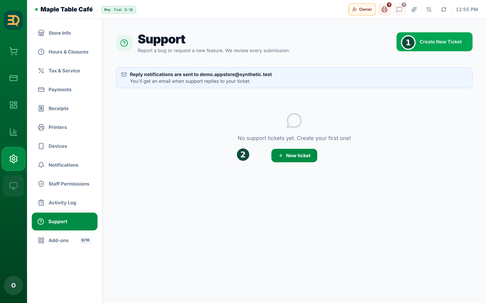
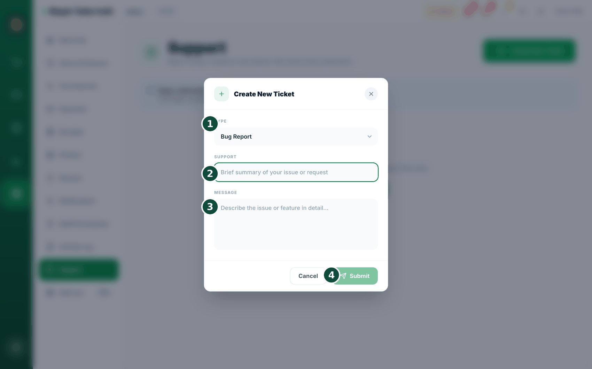
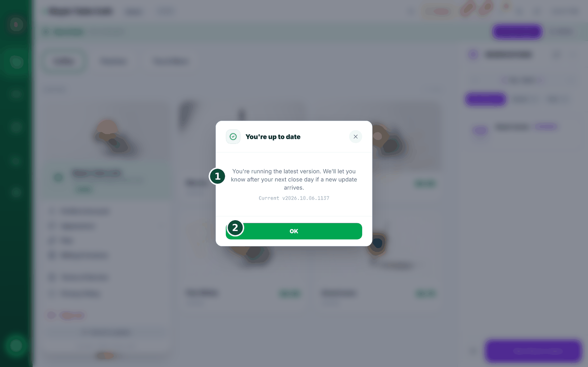

27Solución de problemas y soporte
A veces algo sale mal, y está bien. Aquí tiene soluciones rápidas para los problemas más comunes y cómo pedirnos ayuda.


- ¿El botón Card se ve gris y no responde? Todavía no vinculó su cuenta de Stripe. Vaya a Cobrar para conectarla.
- ¿Se cortó internet? No se preocupe: siga vendiendo. BrewDesk funciona bien sin conexión. Consulte Trabajar sin conexión.
- ¿No se imprimió una comanda de cocina? Compruebe que la impresora esté encendida y luego revise la lista de reintentos. Consulte Recibos e impresoras.
- ¿Una pantalla en blanco, o la app parece trabada después de una actualización? Toque el botón Refresh / Clear cache en la parte superior de la pantalla y confirme. Borra los archivos antiguos de la app y carga una copia nueva; sus pedidos y ajustes guardados están a salvo.

- ¿Sigue atascado? En la app, vaya a Settings › Support › Create New Ticket para abrir un ticket de soporte (es decir, escribirnos un mensaje). O vaya a brewdesk.io.
Refresh / Clear cache es la solución rápida justo después de una actualización. Vuelve a cargar la versión más reciente de la app sin tocar sus pedidos ni sus ajustes guardados.
Un ticket de soporte es simplemente un mensaje que envía a nuestro equipo de ayuda. Cuéntenos qué salió mal y le responderemos.
¿Botones cortados o texto demasiado pequeño en una tableta chica? Abra el menú de la cuenta (arriba a la derecha) y busque Display Scaling (Escala de pantalla). Déjelo en Auto (Automático) y BrewDesk ajusta sola la pantalla a su dispositivo, mostrándole el porcentaje que eligió. Cambie a Manual si prefiere elegir usted el tamaño.
¿No inició sesión, o ayuda a alguien que no lo hizo? Hay una página de ayuda sencilla en brewdesk.io/support, sin necesidad de iniciar sesión. Tiene nuestra dirección de correo, cuánto solemos tardar en responder y respuestas a las preguntas más frecuentes (sin conexión, hardware, pagos con tarjeta, límites de dispositivos, cancelación, dónde se guardan sus datos).
Actualizaciones automáticas
Mejoramos BrewDesk constantemente, y su caja recibe la nueva versión sola. Nunca lo hace en medio de una venta; aquí se explica exactamente cuándo ocurre y qué verá.
- Las actualizaciones solo empiezan justo después de encender la caja al comenzar el día, no mientras la está usando. Actualizar la página no cuenta; tiene que ser un reinicio real.
- Incluso entonces, BrewDesk primero comprueba que sea seguro: el carrito debe estar vacío, no debe haber ningún pago en curso, debe haber conexión y nada debe estar pendiente de sincronizar. Si algo de eso no se cumple, espera a otro día.
- Recibe un aviso de 3 segundos antes de que pase nada: "Starting the update" → "Starting in 3s."
- ¿Ahora no? Simplemente toque la pantalla. El mensaje dice "Tap the screen to do this later": un toque lo cancela y usted sigue. No volverá a preguntar hasta la próxima vez que encienda la caja.
- Si lo deja continuar, aparece la pantalla de actualización con su logotipo y una línea breve que indica qué está haciendo: "Checking the new version" → "Loading the screen" → "Loading your store". Solo ocurre una vez al día por dispositivo.
Le avisa cuando tarda un poco. Después de unos 15 segundos, la línea cambia a "Taking a little longer. You can leave it as is.". No hay nada roto: déjelo y terminará.
¿Tiene prisa? Empiece con lo guardado. Si después de unos 22 segundos sigue esperando, verá "Waiting for your store information" y un botón Start with saved data (Empezar con los datos guardados). Tóquelo y pasará directamente a la pantalla de su tienda con la información que ya está en el dispositivo, para poder atender al siguiente cliente.
Nunca tiene que quedarse mirándolo. La parte inferior de la pantalla siempre dice "When the update finishes, it'll return to your store screen on its own.". Y si la actualización no puede terminar, BrewDesk desiste en lugar de dejarlo atrapado: "We skipped the update this time. Everything works just as before."
Actualizar a propósito, y por qué a veces espera
También puede pedir la actualización usted mismo en lugar de esperar a la mañana siguiente. Se abre una lista con las novedades y un botón de actualizar debajo.

- Toque el botón de actualizar. Si la caja está ocupada, no se pierde nada: BrewDesk deja la actualización en espera y le explica por qué en una línea.
- "An order is still open. We'll apply it once it's done.": termine el carrito o déjelo en espera.
- "A payment is in progress. We'll apply it when it's done.": nunca en medio de un pago.
- "Please check your internet connection." o "Some orders haven't been sent yet. We'll apply it once they're synced.": espera hasta que sus pedidos estén subidos y a salvo.
- Cuando todo está despejado, dice "Getting the new version" y luego vuelve a cargar sola la pantalla de su tienda.
¿Se está tomando su tiempo? Después de unos 20 segundos verá "Taking a little longer. You can leave it as is.". Si realmente no puede descargarla: "We couldn't get the new version right now. Please try again in a moment.". No hay nada roto ni perdido: siga atendiendo y vuelva a intentarlo más tarde.
Después de actualizarse, se lo dice. La próxima vez que se inicie la caja verá una nota breve, "This version includes improvements and fixes.", para que una pantalla que se ve un poco distinta no sea un misterio.
Temas relacionados
¿Necesita más ayuda?
Puede enviar un ticket de soporte desde la app en Settings › Support.